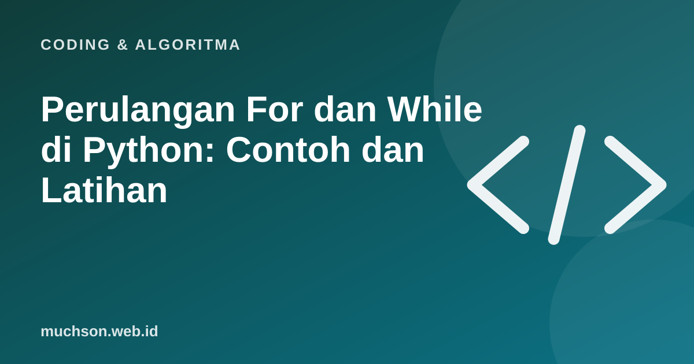

Beranda › Artikel › Coding & Algoritma
Coding & AlgoritmaPerulangan For dan While di Python: Contoh dan Latihan
Perulangan adalah salah satu alat paling kuat dalam pemrograman: satu blok kode bisa dijalankan ratusan atau jutaan kali. Python punya dua jenis perulangan utama, for dan while. Artikel ini menjelaskan kapan memakai masing-masing, lengkap dengan contoh yang bisa langsung dicoba.

For: mengulang untuk setiap item
for dipakai ketika kita tahu apa yang akan diulang: setiap angka dalam rentang, setiap item dalam list, setiap huruf dalam teks.
for i in range(5):
print("Ulangan ke-", i)
# 0, 1, 2, 3, 4 (range berhenti SEBELUM 5)
for i in range(1, 11, 2):
print(i)
# 1, 3, 5, 7, 9 (mulai 1, sebelum 11, lompat 2)
belanja = ["beras", "telur", "minyak"]
for barang in belanja:
print("- " + barang)| Bentuk range | Menghasilkan |
|---|---|
range(5) | 0, 1, 2, 3, 4 |
range(2, 6) | 2, 3, 4, 5 |
range(10, 0, -2) | 10, 8, 6, 4, 2 |
enumerate: butuh nomor urut
peserta = ["Ani", "Budi", "Cici"]
for nomor, nama in enumerate(peserta, start=1):
print(f"{nomor}. {nama}")While: mengulang selama kondisi benar
while dipakai ketika kita tidak tahu berapa kali harus mengulang, hanya tahu kapan harus berhenti.
saldo = 100000
hari = 0
while saldo >= 15000:
saldo -= 15000 # jajan harian
hari += 1
print(f"Uang cukup untuk {hari} hari, sisa {saldo}")# meminta input sampai valid
while True:
umur = input("Umur: ")
if umur.isdigit():
break
print("Masukkan angka ya.")
print("Terima kasih")Awas loop tanpa akhir
Pastikan sesuatu di dalam while mengubah kondisi, misalnya saldo berkurang. Kalau tidak, program berjalan selamanya (infinite loop). Tekan Ctrl + C di terminal untuk menghentikannya.
For atau while?
break dan continue
nilai = [80, 92, 45, 77, 100]
for n in nilai:
if n < 50:
print("Ada yang remedial, berhenti memeriksa")
break # keluar dari loop
print("Lulus:", n)
for n in nilai:
if n < 75:
continue # lewati, lanjut ke item berikutnya
print("Di atas KKM:", n)Perulangan bersarang
for baris in range(1, 6):
for kolom in range(1, 6):
print(f"{baris * kolom:3}", end="")
print()
# Tabel perkalian 5 x 5Kesalahan umum
Latihan
Tanya jawab
Apa beda for dan while di Python?
for mengulang untuk setiap item dalam urutan atau rentang. while mengulang selama kondisi bernilai benar.
Kenapa range(1, 10) tidak sampai 10?
range berhenti sebelum angka akhir. Gunakan range(1, 11) untuk mendapatkan 1 sampai 10.
Bagaimana menghentikan loop di tengah?
Gunakan break untuk keluar, atau continue untuk melewati satu putaran dan lanjut ke berikutnya.
Bagaimana menghentikan program yang loop tanpa akhir?
Tekan Ctrl + C di terminal, lalu perbaiki kondisi loop-nya.
Sumber dan bacaan lanjut
- Python: More Control Flow Tools (tutorial resmi)
- Python: fungsi bawaan range dan enumerate
- Roadmap belajar Python dari nol (artikel terkait)